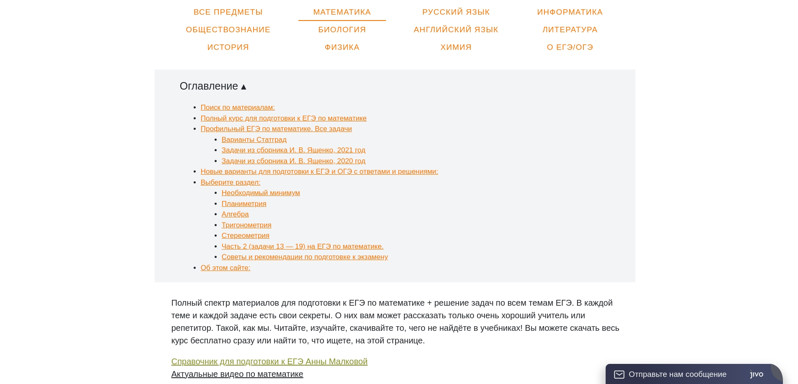

Главная
Актуальность
Отсутствие достаточно удобных и схожих по функционалу сайтов Вся нужная информация в одном месте Современный подход к подаче материала.
Проблемы
- Первая проблема - существующих сайтов видна на этом примере, это объемная и не понятная подача информации для человека который пришел искать материалы на сайте.

- Вторая проблема - это отсутствие справок или ссылок на более простые и нужные вещи, такие как сайты то бесплатной подготовки к экзамену или репетиторы предоставляющие решение и разбор нестандартных задач.
Задачи
- Изучить теорию по созданию сайтовю
- Изучить подобные проектыю
- Создать сайтю